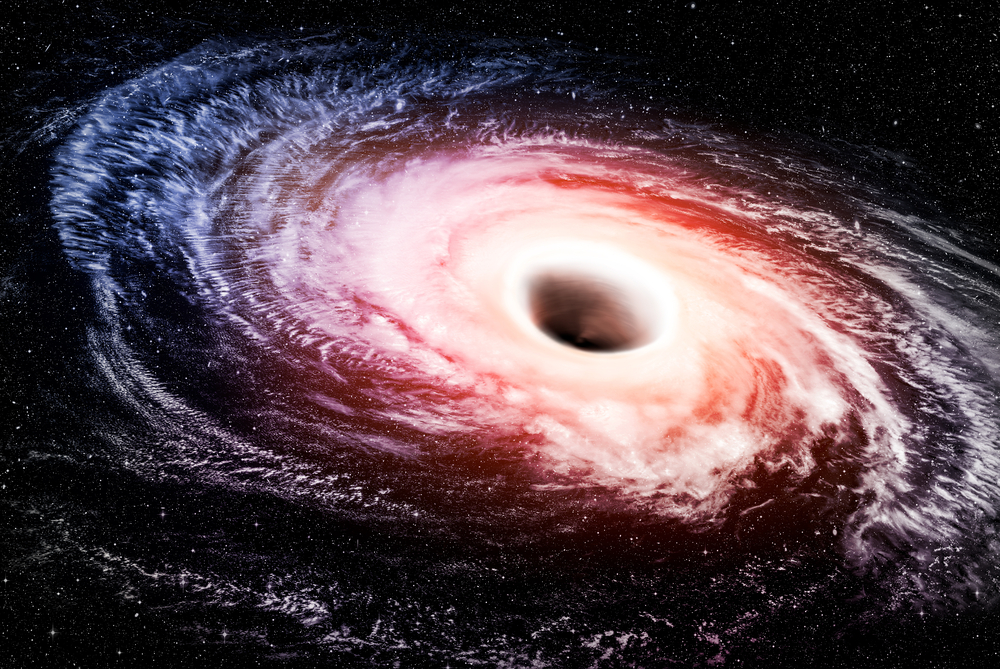

Чёрные дыры — области в космосе, где гравитация настолько сильна, что ничто не сможет вырваться.
Если вы упадете в черную дыру, оставшуюся после гибели звезды, вас разорвет на куски. Большую часть времени они неактивны, но когда активны и пожирают звезды и газ, область около черной дыры может затмить всю галактику, в которой она находится.